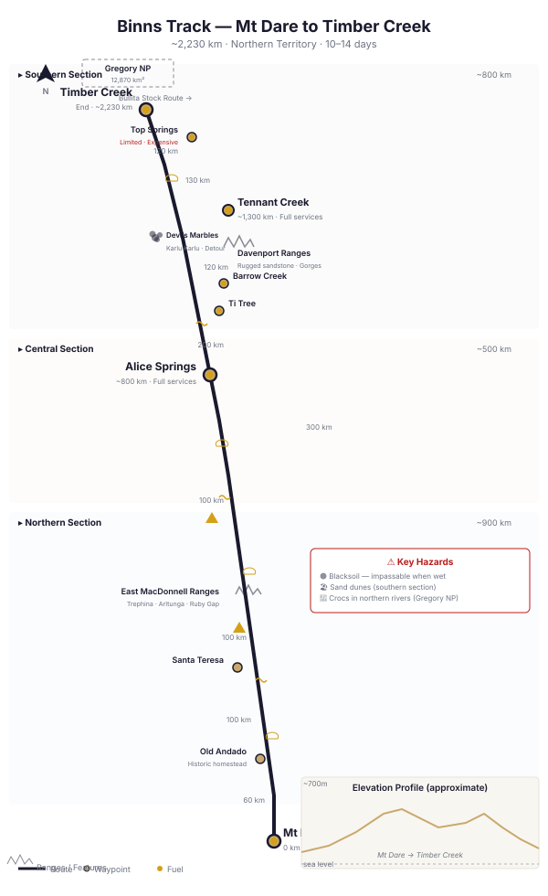

📑 Contents
- Key Facts
- Route Sections
- Southern Section: Mt Dare → Alice Springs (~800 km)
- Central Section: Alice Springs → Tennant Creek (~500 km)
- Northern Section: Tennant Creek → Timber Creek (~900 km)
- Fuel
- Permits
- Best Season
- Hazards
- Communications
- Typical Itinerary (10–14 days)
- Related Pages
- Vehicle Requirements
- Campsite Guide
- GPS Waypoints
- Free Topographic Map Downloads
Binns Track — Map & Track Reference

Binns Track — sections, waypoints, fuel stops, and distances (approx. 2,230 km Mt Dare to Timber Creek)The Binns Track is one of Australia's longest and newest outback adventure routes, running approximately 2,230 km from Mt Dare (on the SA/NT border) to Timber Creek (near the WA/NT border in the Victoria River region). Established in 2008 and named after Mike Binns (a prominent travel writer and outback advocate), the track connects a diverse range of NT landscapes: the sand dunes of the Simpson Desert's western edge, the East MacDonnell Ranges, the Davenport Ranges, the Devils Marbles, and the escarpment country of Gregory National Park.
Unlike purpose-built single-purpose tracks (like the Canning Stock Route), the Binns Track is a linked series of existing station tracks, public roads, and national park 4WD routes. Some sections are well-maintained; others are rough, remote, and require genuine 4WD capability.
Key Facts
| Attribute | Detail |
|---|---|
| Location | Northern Territory (south: Mt Dare, north-west: Timber Creek) |
| Distance | ~2,230 km |
| Terrain | Sand dunes, gibber plains, rocky ranges, river crossings, blacksoil |
| Typical duration | 10–14 days |
| Best season | April–October |
| Established | 2008 |
| Named for | Mike Binns (travel writer) |
Route Sections
The Binns Track is described south to north.
Southern Section: Mt Dare → Alice Springs (~800 km)
Mt Dare to Old Andado
- Terrain: Sand dunes, arid plains, scattered mulga
- Highlights: Mt Dare Station (last SA fuel stop), Mac Clark Conservation Reserve (rare waddi trees)
- Fuel: Mt Dare (expensive, limited hours, call ahead)
- Difficulty: Moderate — sand dune crossings, some soft sections
Old Andado to Santa Teresa
- Terrain: Red sand plains, expanding into the eastern Simpson Desert fringes
- Highlights: Old Andado Station (historic homestead), pituri country
- Fuel: None — Alice Springs is the next reliable fuel
- Difficulty: Moderate — remote with no services
Santa Teresa to Alice Springs
- Terrain: Sandy, well graded approaching Alice Springs
- Highlights: Entering the East MacDonnell Ranges system
- Fuel: Alice Springs (full services)
East MacDonnell Ranges Highlights
| Attraction | Notes |
|---|---|
| Trephina Gorge | Sandstone gorge, walking tracks, swimming |
| Arltunga | Historic gold mining town ruins, visitor centre |
| Ruby Gap | Remote gorge system, 4WD required, camping |
| Emily Gap | Easy access, Aboriginal art sites |
| N'Dhala Gorge | Ancient rock carvings, 4WD access |
Central Section: Alice Springs → Tennant Creek (~500 km)
Alice Springs to Arltunga (alternate north)
- Terrain: Rocky tracks through the East MacDonnells
- Highlights: Arltunga, Ruby Gap
- Difficulty: Moderate — some rocky creek crossings
Maryvale to Barrow Creek
- Terrain: Plains with scattered ranges. Transitioning from MacDonnell country to the centre-north.
- Difficulty: Moderate — Binns Track follows station roads and pastoral tracks
- Fuel: Alice Springs, then Ti Tree (sealed Hwy access), Barrow Creek
Davenport Ranges
- Terrain: Rugged sandstone ranges, gorges, creek crossings
- Highlights: Old Police Station Waterhole, Whistleduck Creek, Frew River
- Difficulty: Moderate to Hard in sections — can be rough, rocky
- Fuel: None on the track itself — closest is Tennant Creek or Barrow Creek
Devils Marbles (Karlu Karlu)
- Distance from Alice Springs: ~400 km
- Location: Just off the Stuart Highway, near Wauchope
- Highlights: Iconic granite boulders, sunrise/sunset photography, easy walk
- Camping: Yes (free camp near the reserve or commercial at Wauchope)
- Fuel: Wauchope (limited) or Tennant Creek (full services)
Note: The Binns Track does not formally pass the Devils Marbles but they are a short detour from the route.
Northern Section: Tennant Creek → Timber Creek (~900 km)
Tennant Creek to Top Springs
- Terrain: Barkly Tableland blacksoil plains (dangerous when wet), transitioning to Victoria River basin
- Highlights: Lake Woods, Elliott (fuel option)
- Difficulty: Moderate — long sections, blacksoil bogs when wet
- Fuel: Tennant Creek, Top Springs (limited, expensive)
Gregory National Park
- Area: 12,870 km² — second largest national park in the NT
- Terrain: Sandstone escarpments, limestone gorges, riverine woodland
- Highlights:
- Limestone Gorge — swimming hole, walking tracks
- Bullita Stock Route — historic cattle route, 4WD track, camping
- Victoria River views
- Permits: NT Parks camping permit required. Park entry free.
- Camping: Several campgrounds (Limestone Gorge, Bullita, various bush camps)
- Fuel: Timber Creek (north end), Top Springs (south-east)
Bullita Stock Route (within Gregory NP)
- Distance: ~70 km within the park
- Terrain: Limestone, sand, rocky creek crossings
- Notes: One-way track (east-west). Requires 4WD. No trailers. Dry weather only.
- Camping: Bullita homestead (basic), bush camps along the route
Timber Creek
- End of the Binns Track
- Services: Fuel, pub, general store, accommodation, camping
- Notes: Small town on the Victoria River. Connects to the Victoria Highway (80 km to Kununurra or 300 km to Katherine).
Fuel
| Location | Distance from Mt Dare (approx) | Notes |
|---|---|---|
| Mt Dare | 0 km | Expensive, limited hours. Fill up. |
| Finke | ~60 km | Limited fuel. Not always available. |
| Alice Springs | ~800 km | Full services. |
| Ti Tree | ~950 km | On Stuart Highway (side trip). |
| Barrow Creek | ~1,050 km | Roadhouse. Limited hours. |
| Tennant Creek | ~1,300 km | Full services. |
| Top Springs | ~1,700 km | Roadhouse. Expensive. Limited hours. |
| Timber Creek | ~2,230 km | End. Full service roadhouse. |
Permits
| Permit | Required | Cost (2025) | Notes |
|---|---|---|---|
| Aboriginal Land Permits | Some sections cross Aboriginal land | Varies | Apply to Central Land Council (southern sections) or Northern Land Council (northern sections). Allow 2–4 weeks. |
| Gregory NP Camping | Camping in Gregory National Park | ~$7/person/night | NT Parks online booking. |
| Mac Clark Conservation Reserve | Entry/camping | Free | No fee but register at Mt Dare. |
Best Season
- Optimal: April through October
- Southern section: 15–30°C, dry, good conditions
- Central section: 18–32°C, dry, good road conditions
-
Northern section: 20–35°C, dry
-
Avoid: November through March
- Northern sections (Gregory NP, Victoria River) subject to flooding
- Blacksoil plains (Barkly Tableland sections) impassable when wet
- Extreme heat (45°C+ central sections)
- Creek crossings dangerous or impassable
Hazards
| Hazard | Details | Mitigation |
|---|---|---|
| Blacksoil | Northern section blacksoil turns into a bog when wet — can sink a vehicle to the axles. | Do not drive on blacksoil when wet. Wait for dry conditions. |
| Sand dunes | Southern section (Mt Dare area). | Drop tyre pressure (15–18 PSI). Momentum. |
| River crossings | Frew River, Victoria River tributaries in Gregory NP. | Check depth. Walk first. Crocodiles present in northern rivers. |
| Remote sections | Long gaps between fuel and services. | Carry extra fuel (60 L+), water 5 L/person/day. |
| Corrugations | Variable — some sections rough, some graded. | Moderate speed. Check vehicle regularly. |
| Navigation | Track markers may be missing or faded on station roads. | GPS + paper maps. Hema Binns Track map. |
| Cattle | Cattle on station roads. Active station traffic. | Drive cautiously. Cattle can appear suddenly. |
Communications
| Method | Coverage | Notes |
|---|---|---|
| Mobile phone | Limited | Near major towns (Alice Springs, Tennant Creek). Nil on station tracks. |
| Satellite phone | Full | Recommended for northern sections. |
| PLB | Emergency | Mandatory for remote sections. |
| UHF CB | Line-of-sight | Useful for convoy. |
Typical Itinerary (10–14 days)
| Section | Days | From | To |
|---|---|---|---|
| Southern | 3–4 | Mt Dare | Alice Springs (via Old Andado, East MacDonnells) |
| Central | 2–3 | Alice Springs | Tennant Creek (via Davenport Ranges) |
| Northern | 4–6 | Tennant Creek | Timber Creek (via Gregory NP) |
| Buffer | 1–2 | — | Contingency for breakdowns, weather |
Related Pages
- Outback 4WD Survival — General outback survival principles
- Route Planning — Fuel calculations, trip permits
- What to Carry — Outback gear checklist
- Vehicle Breakdown — Stay or go decision framework
- Simpson Desert — Adjacent region
Vehicle Requirements
| Requirement | Minimum | Recommended |
|---|---|---|
| Tyres | LT all-terrain | LT mud-terrain (varied surfaces) |
| Spare tyres | 1 (fuel/service stops every 100–380 km) | 1 + repair kit |
| Fuel range | 500 km minimum | 600 km |
| Snorkel | Not required | Recommended for dust and possible water crossings (northern section) |
| Suspension | Standard heavy-duty adequate | 2\" lift for MacDonnell Ranges sections |
| Recovery gear | Snatch strap, shackles, shovel, air compressor | Maxtrax, winch |
| Water | 5L per person per day | 7L |
| Communications | 5W UHF, PLB, mobile phone (Telstra reception in towns and some highway sections) | Sat phone for remote northern section |
| Trailer suitability | OK (track is generally well-maintained, suitable for off-road campers) | Off-road camper trailer OK. Not suitable for standard caravans on southern section. |
| Vehicle type | High-clearance 4WD. Sections range from easy gravel to moderate 4WD. | LandCruiser, Patrol, Prado, Pajero, well-prepared dual-cab ute. |
Campsite Guide
South-to-North (10–14 days recommended)
| Night | Campsite | GPS | Facilities | Notes |
|---|---|---|---|---|
| 0 | Mt Dare Hotel | -26.0733, 135.2445 | Fuel, meals, accommodation, camping ($) | Southern start. |
| 1 | Old Andado Station | -25.4930, 135.3330 | Historic homestead, camping, basic facilities | ~100 km. Homestead open for viewing. |
| 2 | Alice Springs | -23.6980, 133.8810 | Major town, all services | ~400 km. Restock, shower, repairs. |
| 3 | Trephina Gorge | -23.5260, 134.3710 | National Park campground, toilets | ~85 km. East MacDonnell Ranges. Walk the gorge. |
| 4 | Arltunga | -23.4600, 134.7100 | Historic site, camping, toilets | ~25 km. Gold mining ghost town. |
| 5 | Ti Tree | -22.1300, 133.4160 | Roadhouse, fuel, camping | ~250 km. Back on Stuart Highway briefly. |
| 6 | Barrow Creek | -21.5320, 133.8890 | Historic telegraph station, pub, camping | ~85 km. Character outback pub. |
| 7 | Devils Marbles | -20.5660, 134.2720 | Campground, toilets, iconic boulders | ~110 km. MUST STAY. Sunset and sunrise here are unforgettable. |
| 8 | Tennant Creek | -19.6470, 134.1900 | Major town, all services | ~100 km. Resupply, fuel, shower. |
| 9 | Top Springs | -16.5400, 131.8000 | Roadhouse, fuel, camping | ~380 km. Junction. Remote. |
| 10 | Gregory National Park | -15.9980, 130.3290 | Camping, toilets, walks | ~70 km. Limestone formations. Bullita Stock Route. |
| 11 | Timber Creek | -15.6550, 130.4800 | Fuel, basic supplies, camping | ~140 km. END of Binns Track. |
Camping notes: - Mix of National Park campgrounds and bush camping. Park campgrounds may need booking in peak. - Devils Marbles: book ahead during peak season (Jun–Aug). Sunset is spectacular. - Northern section (Top Springs → Timber Creek): remote. Carry fuel and water. Check road conditions. - Fires: allowed in designated areas. Check local fire bans. - Wildlife: kangaroos at dusk on all sections — reduce speed, watch road edges.
GPS Waypoints
All coordinates WGS84 datum.
Southern Section (Mt Dare → Alice Springs)
| Location | Latitude | Longitude | Notes |
|---|---|---|---|
| Mt Dare Hotel | -26.0733 | 135.2445 | Southern start, fuel, meals |
| Old Andado Station | -25.4930 | 135.3330 | Historic homestead, camping |
| Mac Clark Conservation Reserve | -25.2200 | 135.2500 | Waddi trees (rare acacia species) |
| Santa Teresa | -24.1930 | 134.3710 | Aboriginal community (permit may be required) |
| Alice Springs | -23.6980 | 133.8810 | Major town, fuel, supermarket, hospital |
Central Section (Alice Springs → Tennant Creek)
| Location | Latitude | Longitude | Notes |
|---|---|---|---|
| Trephina Gorge | -23.5260 | 134.3710 | East MacDonnell Ranges, camping, walking trails |
| Arltunga | -23.4600 | 134.7100 | Historic gold mining ghost town |
| Ruby Gap | -23.4360 | 135.0210 | Remote gorge, 4WD access |
| Ti Tree | -22.1300 | 133.4160 | Roadhouse, fuel, Stuart Highway |
| Barrow Creek | -21.5320 | 133.8890 | Historic telegraph station, pub |
| Devils Marbles | -20.5660 | 134.2720 | Iconic granite boulders, camping |
| Tennant Creek | -19.6470 | 134.1900 | Major town, fuel, supermarket |
Northern Section (Tennant Creek → Timber Creek)
| Location | Latitude | Longitude | Notes |
|---|---|---|---|
| Tennant Creek | -19.6470 | 134.1900 | Fuel, supplies |
| Top Springs | -16.5400 | 131.8000 | Roadhouse, fuel, junction of Buntine and Buchanan Highways |
| Gregory National Park entrance | -15.9980 | 130.3290 | Camping, limestone formations |
| Bullita Stock Route | -16.0870 | 130.4460 | Historic stock route through Gregory NP |
| Limestone Gorge | -16.0460 | 130.4100 | Walking trails, camping |
| Timber Creek | -15.6550 | 130.4800 | Northern terminus, fuel, basic supplies |
Fuel Stops
| Location | Latitude | Longitude | Distance from Previous |
|---|---|---|---|
| Mt Dare | -26.0733 | 135.2445 | Start |
| Finke | -25.5900 | 134.5700 | 90km |
| Alice Springs | -23.6980 | 133.8810 | 230km |
| Ti Tree | -22.1300 | 133.4160 | 190km |
| Barrow Creek | -21.5320 | 133.8890 | 85km |
| Tennant Creek | -19.6470 | 134.1900 | 220km |
| Top Springs | -16.5400 | 131.8000 | 380km |
| Timber Creek | -15.6550 | 130.4800 | 140km |
Free Topographic Map Downloads
Geoscience Australia provides free 1:250,000 scale topographic maps of the entire continent under a CC BY 4.0 licence. These are the same maps used by emergency services, park rangers, and experienced outback travellers.
How to Download
Step 1: Go to the Geoscience Australia Product Catalogue
Step 2: Search for the map sheet code (e.g., "SG53-12") in the search box
Step 3: Click the result, then click Download (PDF, 3–8MB per sheet)
Relevant 1:250K Map Sheets
| Map Sheet | Code | Coverage |
|---|---|---|
| McDills | SG53-12 | Southern start, Mt Dare, Old Andado |
| Alice Springs | SF53-14 | Alice Springs, East MacDonnell Ranges |
| Alcoota | SF53-10 | Santa Teresa, north of Alice |
| Barrow Creek | SF53-06 | Central section, Davenport Ranges |
| Bonney Well | SF53-02 | Devils Marbles area |
| Tennant Creek | SE53-14 | Tennant Creek, central NT |
| Newcastle Waters | SE53-05 | Northern NT, Elliott area |
| Victoria River Downs | SE52-04 | Top Springs, Gregory NP approach |
| Auvergne | SD52-15 | Northern terminus, Timber Creek, WA border |
Offline Mapping Apps (No Internet Needed)
For smartphone/tablet navigation without mobile reception:
- OsmAnd — Free offline maps using OpenStreetMap data. Download state maps before your trip. Works entirely offline with GPS.
- Avenza Maps — Free app. Load GeoPDF topo maps from Geoscience Australia (downloaded via the catalogue above). GPS works offline.
- ExplorOz Traveller — Australia-specific 4WD navigation. Paid app but designed for outback use. Offline maps included.
Paper Maps (Essential Backup)
Always carry paper maps. Electronics fail in heat, dust, and corrugations.
| Map | Publisher | Coverage |
|---|---|---|
| Hema Central Australia | Hema Maps | 1:250K — Detailed track map with fuel stops, campsites, POIs |
| Westprint Red Centre | Westprint Maps | 1:1M — Overview map with historical notes and track conditions |
Key Notes
- All GA maps use GDA94/WGS84 datum — fully compatible with GPS
- Print at 100% scale (A1 or A0 paper) for readable detail
- Carry hard copies — they do not require batteries or signal
- GA maps are CC BY 4.0 — free to download, use, share, and print commercially